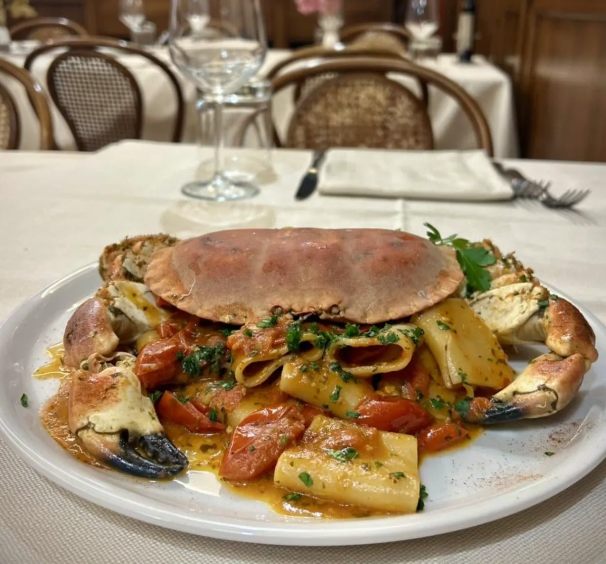
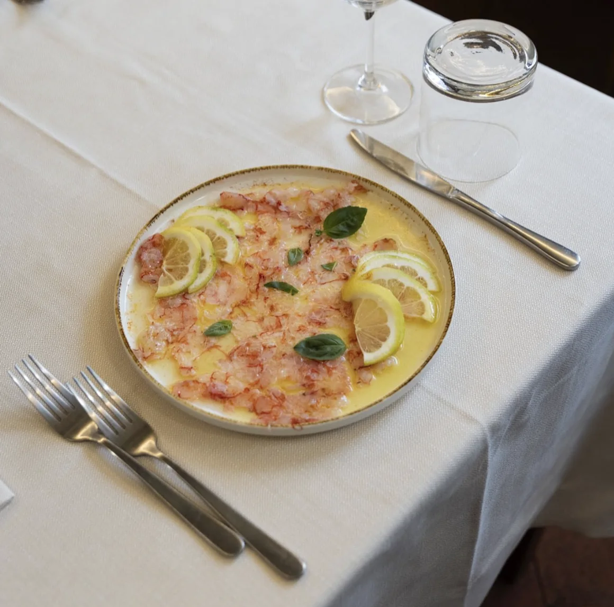
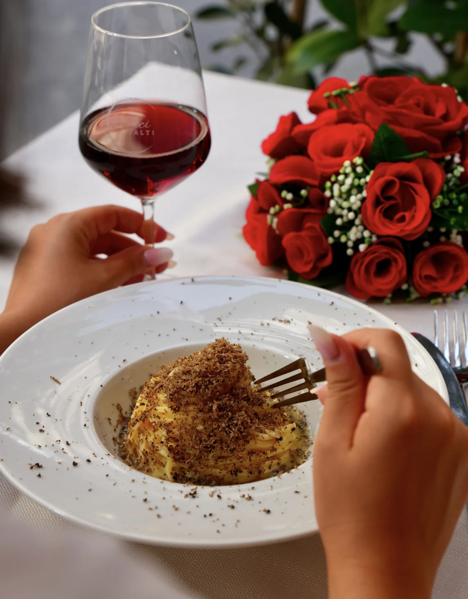
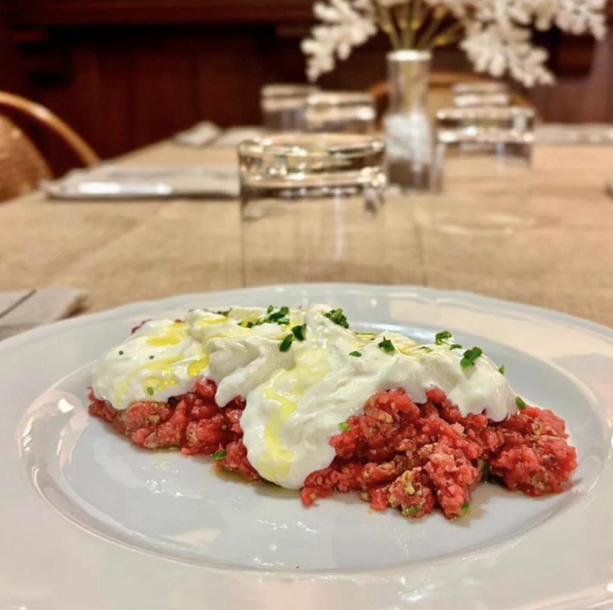
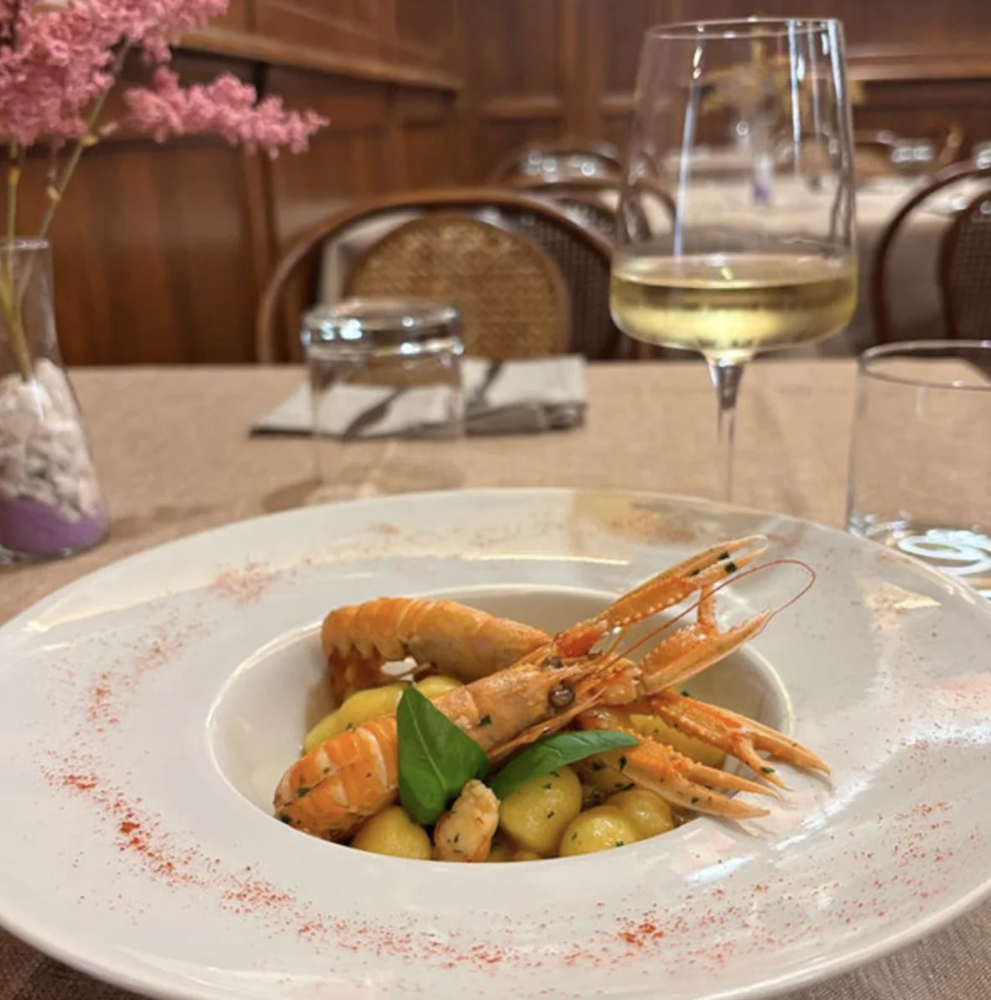

Via San Giorgio 36Lucca
CaliciAlti
Ristorante

Cucina toscana espressaDal 2025




La cucina
Toscana, preparata espressa
Pasta fresca fatta in casa e tartufo grattugiato al momento.
- Tagliolini al tartufo fresco
- Ravioli pere e formaggio
- Vitello tonnato con cucunci
Eventi e catering
Feste, Domus Romana e catering
- Cene a tema e feste private
- La sala della Domus Romana, collegata al ristorante
- Catering da 10 a 500 ospiti